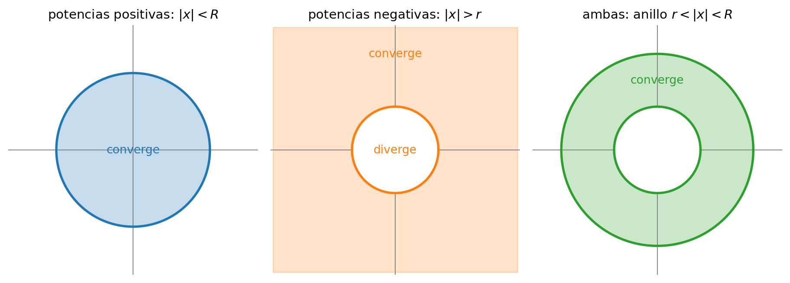

Apéndice B — Series
NotaPara qué sirve este apéndice
Igual que los complejos, las series no son materia de este curso: son su idioma. Pero aquí hay algo más concreto que un repaso: cuando en el capítulo 6 aparezca la región de convergencia de la transformada Z y parezca una condición técnica arbitraria, va a ser exactamente lo que estás por leer. La ROC no es una regla del curso — es dónde converge una serie de potencias, ni más ni menos.
Léelo antes de la unidad 6. Si lo lees antes de la 4, mejor: la ROC de Laplace es el mismo argumento con una integral en vez de una suma.
B.1 Por qué un curso de señales habla en series
Casi todas las transformadas del semestre son sumas infinitas o integrales de un mismo tipo:
X(z) = \sum_{n=-\infty}^{\infty} x[n]\,z^{-n}, \qquad X(s) = \int_{-\infty}^{\infty} x(t)\,e^{-st}\,dt
Escribir la fórmula es gratis. La pregunta que no es gratis: ¿para qué valores de z (o de s) esa suma da un número finito? Fuera de ese conjunto la transformada sencillamente no existe, y dos señales completamente distintas pueden tener la misma fórmula y diferenciarse solo por dónde converge.
Ese conjunto tiene nombre —la región de convergencia— y este apéndice es su maquinaria.
B.2 Series de potencias
Una serie de potencias centrada en el origen es S(x) = \sum_{k=0}^{\infty} a_k\,x^k = a_0 + a_1 x + a_2 x^2 + \cdots
El ejemplo que hay que tener tatuado es la serie geométrica, porque es prácticamente la única que este curso necesita sumar en forma cerrada: \sum_{k=0}^{\infty} r^k = \frac{1}{1-r} \qquad \textbf{si y solo si } |r| < 1
Si |r| \ge 1 los términos no se achican y la suma se va a infinito. Esa condición |r|<1, que parece inocente, es el origen de casi todas las ROC del curso.
TipVerificación en una línea
S = 1 + r + r^2 + \cdots. Entonces rS = r + r^2 + \cdots = S - 1, de donde S(1-r) = 1 y S = 1/(1-r). El paso ilegal está en asumir que S es finito: por eso la fórmula solo vale donde converge.
B.3 El requisito de convergencia y la razón de D’Alembert
Para que \sum a_k converja, es necesario que a_k \to 0. No es suficiente (la serie armónica \sum 1/k diverge aunque sus términos tiendan a cero), pero sirve para descartar rápido.
El criterio que usaremos es el cociente o razón de D’Alembert: si L = \lim_{k\to\infty}\left|\frac{a_{k+1}}{a_k}\right| entonces la serie converge si L < 1 y diverge si L > 1 (si L = 1 el criterio no decide).
Aplicado a una serie de potencias \sum a_k x^k, el cociente incluye la x: \left|\frac{a_{k+1}x^{k+1}}{a_k x^k}\right| = |x|\left|\frac{a_{k+1}}{a_k}\right| \;\longrightarrow\; \frac{|x|}{R}, \qquad R = \lim_{k\to\infty}\left|\frac{a_k}{a_{k+1}}\right|
y la condición L<1 se convierte en |x| < R. Ese R es el radio de convergencia.
La serie de potencias converge dentro de un disco de radio R y diverge fuera. En el borde |x| = R hay que mirar caso a caso.
B.4 Potencias positivas, potencias negativas, y el anillo
Aquí está el punto que hace que este apéndice sea de este curso y no de Cálculo.
Potencias positivas. \sum_{k\ge0} a_k x^k converge para |x| < R_+: el interior de un disco. Términos con x grande son los que hacen daño, así que hay que quedarse cerca del origen.
Potencias negativas. \sum_{k\ge0} b_k x^{-k} es lo mismo con u = 1/x: converge para |u| < R_-, es decir para |x| > \frac{1}{R_-} el exterior de un disco. Ahora el peligro está cerca del origen: hay que quedarse lejos.
Las dos juntas. Una serie con potencias positivas y negativas —una serie de Laurent— \sum_{n=-\infty}^{\infty} c_n\,x^{n} converge donde convergen ambas mitades a la vez: en un anillo r_{\text{int}} < |x| < r_{\text{ext}}
Si el anillo es vacío, la serie no converge en ninguna parte.
B.5 Dónde se cobra: la ROC de la transformada Z
La transformada Z de una secuencia es, literalmente, una serie de Laurent en z: X(z) = \sum_{n=-\infty}^{\infty} x[n]\,z^{-n}
Mira qué le corresponde a cada mitad:
| Serie | Converge en | |
|---|---|---|
| n \ge 0 (señal derecha, causal) | potencias de z^{-1} | |z| > r — fuera de un disco |
| n < 0 (señal izquierda, anticausal) | potencias de z | |z| < R — dentro de un disco |
| ambas (señal bilateral) | Laurent | r < |z| < R — un anillo |
Y eso es toda la teoría de ROC del capítulo 6. Las tres formas de ROC que ahí se presentan como un catálogo son las tres formas de convergencia que acabas de ver.
El ejemplo canónico. Sea x[n] = a^n u[n] (exponencial causal). Entonces X(z) = \sum_{n=0}^{\infty} a^n z^{-n} = \sum_{n=0}^{\infty}\left(\frac{a}{z}\right)^{n} = \frac{1}{1 - a z^{-1}} = \frac{z}{z-a}
usando la geométrica, válida solo si |a/z| < 1, o sea |z| > |a|. La ROC es el exterior del círculo de radio |a|, y el borde de esa región es justamente donde está el polo z = a.
ImportanteLa consecuencia que más cuesta en la interrogación
La fórmula X(z) = z/(z-a) no determina la señal. La secuencia anticausal x[n] = -a^n u[-n-1] tiene exactamente la misma fórmula, pero converge en |z| < |a| — el interior.
Misma expresión algebraica, dos señales distintas, dos ROC distintas. Por eso en este curso una transformada sin su ROC es media respuesta, y así se corrige.
El mismo argumento, con integral en vez de suma, da las ROC de Laplace del capítulo 4: semiplano derecho para señales derechas, semiplano izquierdo para izquierdas, franja para bilaterales.
B.6 Series de Taylor
La otra cara de las series de potencias: en vez de preguntar a qué converge una serie dada, se construye la serie que reproduce una función conocida.
Si f es suficientemente derivable en x_0: f(x) = \sum_{k=0}^{\infty} \frac{f^{(k)}(x_0)}{k!}\,(x-x_0)^k
Centrada en x_0 = 0 se llama serie de Maclaurin. Las tres que el curso usa sin avisar:
e^{x} = \sum_{k=0}^{\infty}\frac{x^k}{k!}, \qquad \cos x = \sum_{k=0}^{\infty}\frac{(-1)^k x^{2k}}{(2k)!}, \qquad \sin x = \sum_{k=0}^{\infty}\frac{(-1)^k x^{2k+1}}{(2k+1)!}
Las tres convergen para todo x (R = \infty).
TipDe aquí sale Euler
Evalúa la serie de e^x en x = j\theta y separa las potencias pares de las impares: e^{j\theta} = \underbrace{\left(1 - \tfrac{\theta^2}{2!} + \tfrac{\theta^4}{4!} - \cdots\right)}_{\cos\theta} + j\underbrace{\left(\theta - \tfrac{\theta^3}{3!} + \tfrac{\theta^5}{5!} - \cdots\right)}_{\sin\theta}
La identidad de Euler del Apéndice A no es una definición ni un truco de notación: es lo que sale de sumar tres series de Taylor. Los dos apéndices se tocan justo aquí.
La serie de Taylor también da la lectura correcta de las aproximaciones que el curso usa a la ligera: \sin\theta \approx \theta para \theta pequeño es quedarse con el primer término, y el error es del orden de \theta^3/6.
B.7 Ejercicios de nivelación
Sin calculadora; respuestas entre corchetes.
- ¿Para qué valores de r converge \sum_{k\ge0} r^k, y a cuánto? — [|r|<1; 1/(1-r)]
- Suma \sum_{k\ge0} (1/3)^k y \sum_{k\ge2} (1/3)^k. — [3/2; 3/2 - 1 - 1/3 = 1/6]
- Radio de convergencia de \sum_{k\ge0} \frac{x^k}{k!} usando D’Alembert. — [R=\infty: el cociente es |x|/(k+1)\to0]
- Radio de convergencia de \sum_{k\ge0} k\,x^k. — [R=1]
- ¿Dónde converge \sum_{k\ge0} 2^{-k}x^{-k}? Descríbela como región del plano. — [|x|>1/2: exterior del círculo de radio 1/2]
- Escribe \sum_{n\ge0}(a/z)^n en forma cerrada e indica dónde vale. — [\dfrac{1}{1-az^{-1}} = \dfrac{z}{z-a}, si |z|>|a|]
- La señal x[n] = (1/2)^n u[n]: calcula X(z) y su ROC. — [\dfrac{z}{z-1/2}, ROC |z|>1/2]
- La señal x[n] = -(1/2)^n u[-n-1]: calcula X(z) y su ROC. Compara con la anterior. — [misma fórmula \dfrac{z}{z-1/2}, pero ROC |z|<1/2 — la fórmula sola no distingue]
- Deduce \cos\theta y \sin\theta a partir de la serie de e^{j\theta}. — [separar potencias pares e impares, como en el callout]
- ¿Cuál es el error de aproximar \sin(0{,}1) \approx 0{,}1? — [\approx 0{,}1^3/6 \approx 1{,}7\times10^{-4}]
En el banco del curso, los ejercicios donde esto se cobra de verdad: [DB E0112] (inversa de Laplace con ROC), [DB E0175] y [DB E0186] (Z de secuencias y de una bilateral, donde la ROC decide).